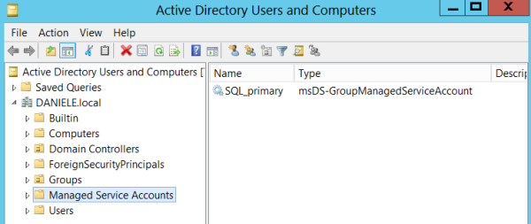

Configure gMSA
Configuration only for Testing purpose:PS> Add-KdsRootKey -EffectiveTime (Get-Date).AddHours(-10)
PS> New-ADServiceAccount -Name 'SQL_primary' -DNSHostName 'sql2.daniele.local' -PrincipalsAllowedToRetrieveManagedPassword 'Administrator'
*we should not use the built-in Administrator account in a production environment
Domain Controller → Server Manager → Tools → Active Directory Users and Computers
Retrieve Managed Password:
PS> Get-ADServiceAccount -Identity 'SQL_primary' -Properties 'msDS-ManagedPassword'
Bibliography:
•
https://www.signalwarrant.com/enterprise-security-how-to-configure-and-use-group-managed-service-accounts/•
https://techcommunity.microsoft.com/t5/itops-talk-blog/step-by-step-how-to-work-with-group-managed-service-accounts/ba-p/329864